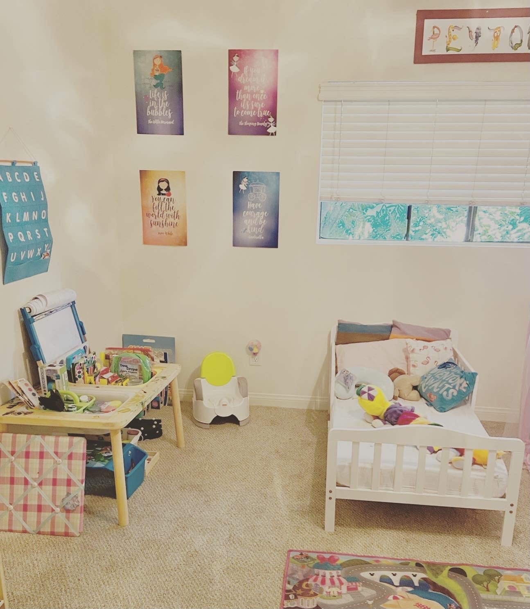

The Importance of Teaching Organization Skills to Children
As parents and caregivers, we play a vital role in shaping our children's future. Alongside academic education and extracurricular activities, it's equally crucial to impart life skills that will serve them well throughout their lives. Among these essential skills, organization stands out as a fundamental cornerstone. Teaching organization skills to children not only helps them manage their belongings and time effectively but also lays the foundation for their future success. In this article, we'll explore the significant reasons why it's crucial to instill organization skills in children from an early age.
Promotes Responsibility and Independence: Teaching organization skills empowers children to take responsibility for their belongings and personal space. When they learn to keep their rooms tidy, organize their school materials, and manage their time efficiently, they gain a sense of ownership over their lives. This fosters independence, as they become less reliant on constant reminders and assistance from adults.
Builds Confidence: As children master organization skills, they experience a boost in self-confidence. Successfully arranging their toys, completing tasks on time, and staying organized in various aspects of life instills a sense of accomplishment. This confidence not only contributes to their overall well-being but also serves as a strong foundation for tackling challenges and achieving future goals.

Enhances Academic Performance:
Organization skills have a direct correlation with academic success. A well-organized student is better equipped to manage their study materials, complete assignments on time, and stay on top of their schoolwork. Organizational habits, such as maintaining a planner or using a study schedule, enable children to prioritize tasks effectively and allocate appropriate time for different subjects.
Reduces Stress and Anxiety:
A disorganized environment can lead to unnecessary stress and anxiety for children. Feeling overwhelmed by clutter or constantly misplacing items can create feelings of frustration. Teaching organization skills allows children to create orderly and calming spaces, leading to reduced stress levels and a more positive mindset.
Time Management Skills: Organization skills are closely intertwined with time management. By learning how to plan and prioritize tasks, children develop crucial time management skills. These skills are essential for meeting deadlines, balancing commitments, and creating a healthy work-life balance later in life.
Prepares for Adulthood: Organization is a skill that will serve children well as they transition into adulthood. Whether they're managing their own living space, organizing finances, or juggling work responsibilities, the organizational habits instilled during childhood will be invaluable for their success and well-being in adulthood.

Cultivates Lifelong Habits:
Habits developed in childhood often persist into adulthood. By teaching organization skills early on, children are more likely to carry these habits throughout their lives. This contributes to a more organized, efficient, and less stressful adulthood.
Teaches Decision-Making:
Organizing involves making decisions about how to categorize, arrange, and prioritize items and tasks. By engaging in these decision-making processes, children enhance their critical thinking and problem-solving abilities. These skills extend beyond organization and become valuable assets in various aspects of life.
Respect for Belongings and Environment: Organizing and caring for their belongings instills a sense of respect for what they own and the environment around them. Children learn to value their possessions and understand the importance of keeping their surroundings clean and tidy.
Strengthens Relationships: An organized child is more likely to be responsible, reliable, and respectful of others' time and space. These qualities can strengthen relationships with family, friends, and teachers, as others will appreciate their ability to stay organized and considerate.
Teaching organization skills to children is an investment in their future well-being and success. By fostering responsibility, independence, and time management, organization skills create confident and capable individuals who can navigate life's challenges with ease. Moreover, these skills cultivate lifelong habits that lead to reduced stress, increased productivity, and stronger relationships. As parents and caregivers, let us prioritize the teaching of organization skills to our children, guiding them towards a more organized and fulfilling future.
Learn more about us